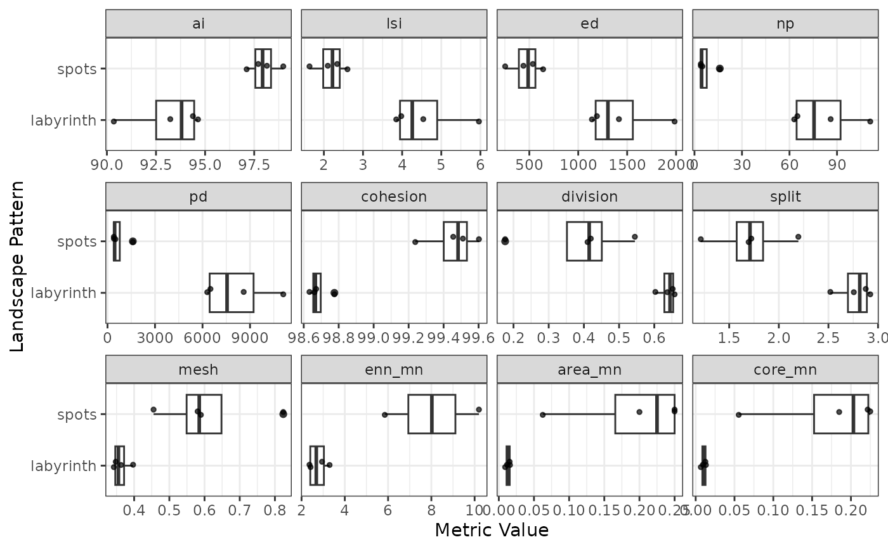
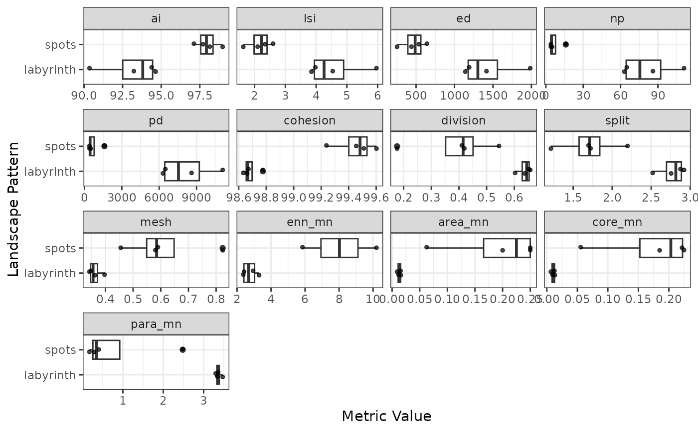
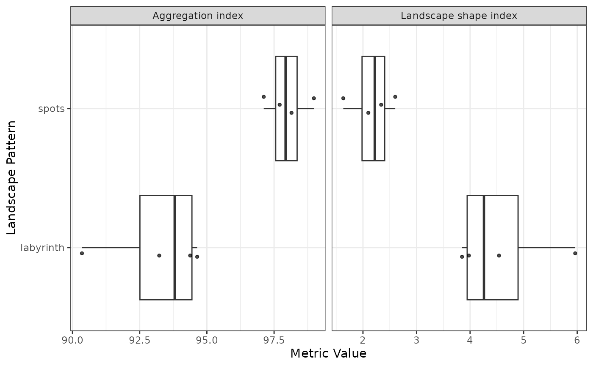
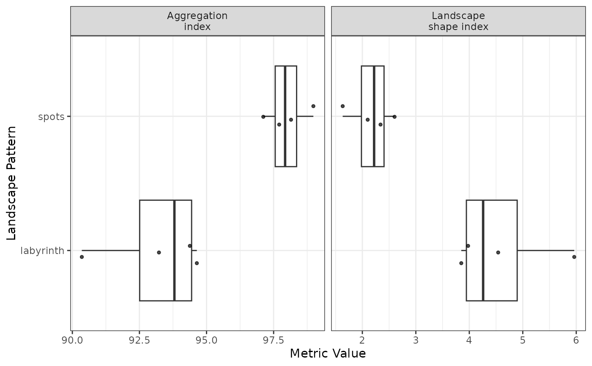
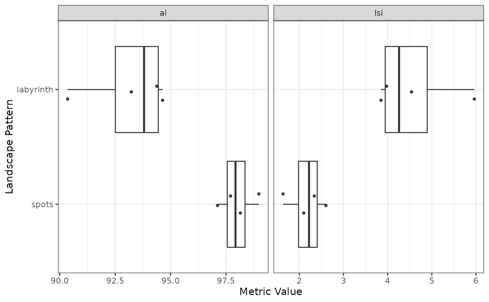
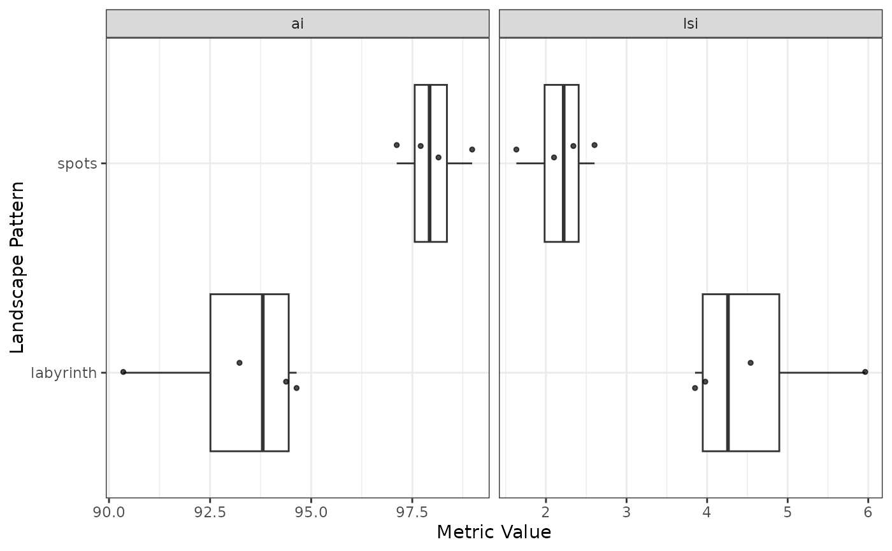

Creates a visualization of landscape metric values across landscape types using boxplots with overlaid jittered points. Metrics are displayed in separate facets.
Usage
plot_metrics(
metrics,
selected_metrics = NULL,
force = FALSE,
metric_labels = "abbreviation",
label_wrap_width = NULL,
pattern_order = NULL,
jitter_seed = NA,
jitter_width = 0.1,
point_size = 1,
point_alpha = 0.7
)Arguments
- metrics
Data frame from
calculate_metrics. Must contain columns: "level", "pattern", "metric", and "value". For class-level metrics, must also contain "class".- selected_metrics
Character vector of metric abbreviations to visualize, as they appear in the
metriccolumn, or the object returned byevaluate_metrics. Must be present in the metrics data. If NULL (default), all available metrics are plotted in alphabetical order, subject to automatic limits based on the number of patterns. Uselist_lsmto look up what an abbreviation stands for, or setmetric_labels = "name"to show the full names.- force
Logical. Override automatic metric limits (default: FALSE). When TRUE, all selected metrics will be plotted regardless of readability.
- metric_labels
Character string controlling how metrics are labelled in facet strips. One of "abbreviation" (default) to use the metric abbreviations as they appear in
metrics(e.g. "ai"), or "name" to use the full metric names fromlist_lsm(e.g. "Aggregation index"). Metrics that summarise per-patch values get the statistic in brackets, sincelist_lsm()gives the_cv/_mn/_sdtriple a single name:area_mnbecomes "Patch area (mean)". For class-level metrics the class is added too (e.g. "Patch area (mean, class 1)"), and themetricsdata must also contain themetric_namecolumn produced bycalculate_metrics.- label_wrap_width
Integer or NULL (default). Character width at which to wrap full metric names in facet strips. Only used when
metric_labels = "name". If NULL, a width is chosen automatically from the number of facet columns. The choice wraps by character count rather than rendered text width, so set it explicitly if your font, figure size, or metric selection needs something different.- pattern_order
Character vector giving the order in which patterns should appear along the y-axis, or NULL (default) for alphabetical order. Must contain exactly the patterns present in
metrics, i.e. every pattern once and no others. The first element is drawn at the bottom of the axis.- jitter_seed
Seed controlling the random jitter of the points, passed to
position_jitter. NA (default) draws fresh jitter each render.- jitter_width
Numeric. Horizontal spread of the points around each pattern (default: 0.1). Set to 0 to disable jitter. Points are never displaced along the value axis, so they always sit at their true metric value.
- point_size
Numeric. Size of the data points (default: 1). Reduce for plots with many landscapes per pattern.
- point_alpha
Numeric between 0 and 1. Opacity of the data points (default: 0.7). Reduce to make overlapping points easier to read.
Details
The function automatically limits the number of metrics based on the number of patterns to maintain readability: - 1-3 patterns: up to 12 metrics (3 rows x 4 columns) - 4-5 patterns: up to 8 metrics (2 rows x 4 columns) - 6+ patterns: up to 6 metrics (2 rows x 3 columns)
See also
calculate_metrics, evaluate_metrics,
list_lsm for the available metrics and
their full names
Other visualization:
plot_classified_landscapes(),
plot_landscapes()
Examples
landscapes <- create_landscapes(n = 8, patterns = c("labyrinth", "spots"))
#> ✔ Successfully generated all 8 training landscapes
metrics <- calculate_metrics(landscapes, level = "landscape")
#> ■■■■■■■■■■■ 33% | ETA: 3s
#> ■■■■■■■■■■■■■■■■■■■■■■■■■■ 82% | ETA: 1s
plot_metrics(metrics, selected_metrics = c("ai", "lsi"))
# With more metrics than fit the grid, automatic limiting applies
many_metrics <- c("ai", "lsi", "ed", "np", "pd", "cohesion", "division",
"split", "mesh", "enn_mn", "area_mn", "core_mn",
"para_mn")
plot_metrics(metrics, selected_metrics = many_metrics)
#> Warning: With 2 patterns, limiting to 12 of 13 requested metrics for readability.
#> ℹ Showing: "ai", "lsi", "ed", "np", "pd", "cohesion", "division", "split",
#> "mesh", "enn_mn", "area_mn", and "core_mn"
#> ℹ Use `force = TRUE` to show all metrics.
#> Warning: Removed 2 rows containing non-finite outside the scale range
#> (`stat_boxplot()`).
#> Warning: Removed 2 rows containing missing values or values outside the scale range
#> (`geom_point()`).

# Override limits if needed
plot_metrics(metrics, selected_metrics = many_metrics, force = TRUE)
#> Warning: Removed 2 rows containing non-finite outside the scale range
#> (`stat_boxplot()`).
#> Warning: Removed 2 rows containing missing values or values outside the scale range
#> (`geom_point()`).

# Use full metric names instead of abbreviations in facet labels
plot_metrics(metrics, selected_metrics = c("ai", "lsi"), metric_labels = "name")

# Override the automatic wrap width for full metric names
plot_metrics(
metrics,
selected_metrics = c("ai", "lsi"),
metric_labels = "name",
label_wrap_width = 15
)

# Control the order of patterns on the y-axis
plot_metrics(
metrics,
selected_metrics = c("ai", "lsi"),
pattern_order = c("spots", "labyrinth")
)

# Fix the jitter so that repeated runs produce an identical figure
plot_metrics(metrics, selected_metrics = c("ai", "lsi"), jitter_seed = 42)

# Adjust point appearance for plots with many landscapes per pattern
plot_metrics(
metrics,
selected_metrics = c("ai", "lsi"),
point_size = 0.5,
point_alpha = 0.4
)